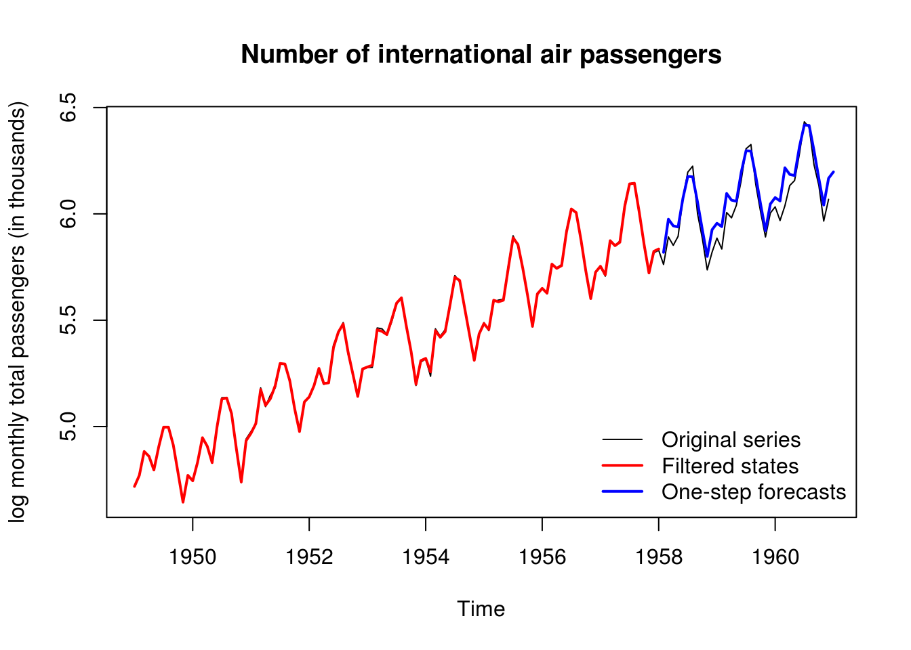
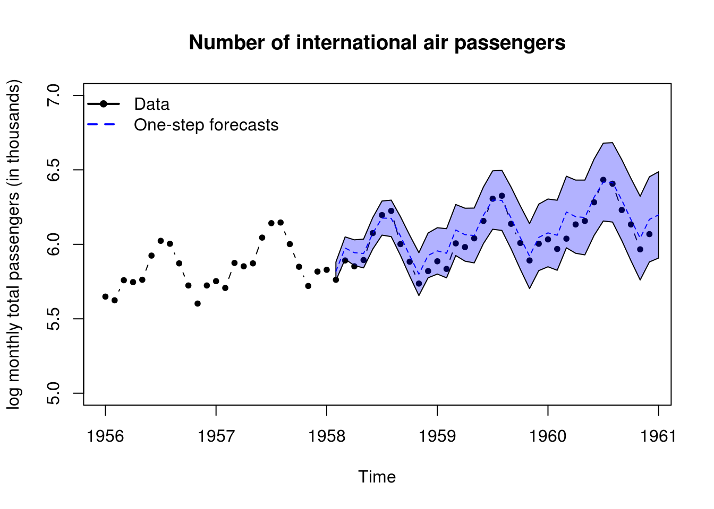
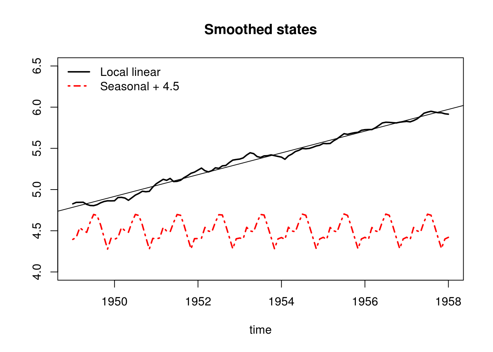
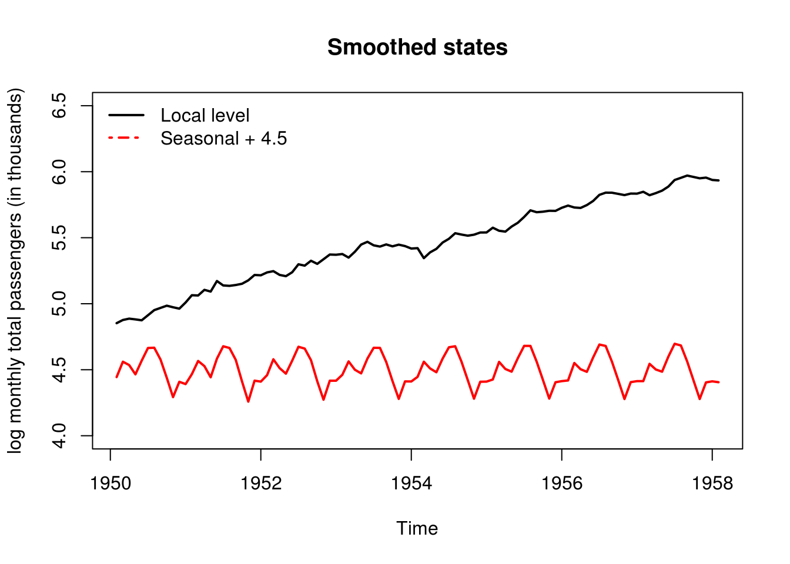
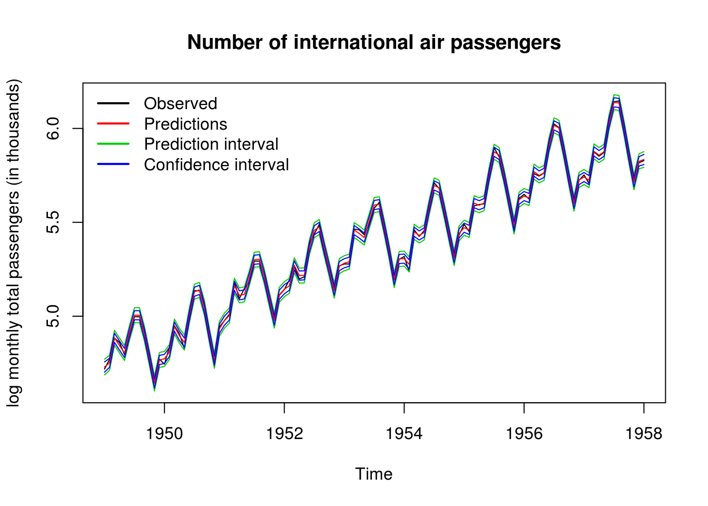
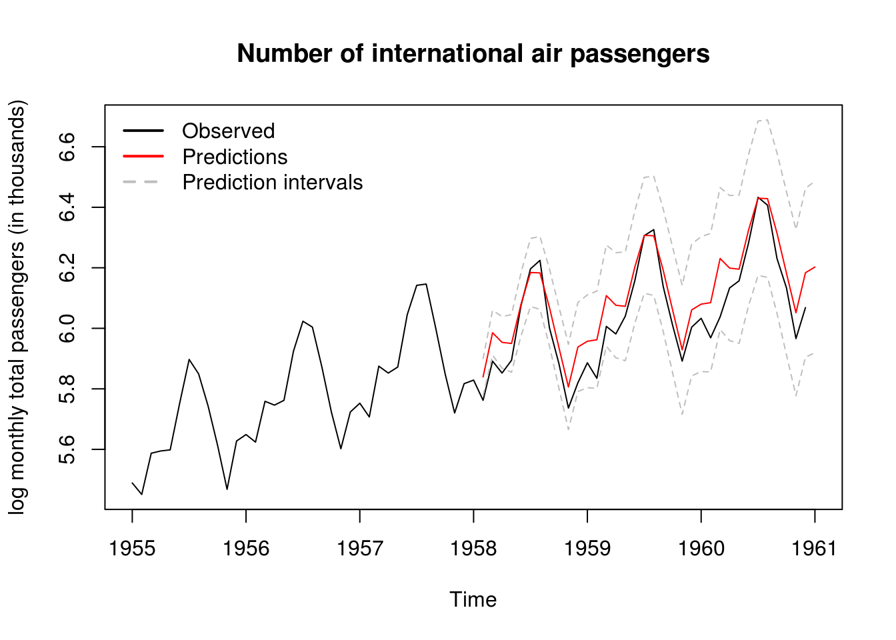
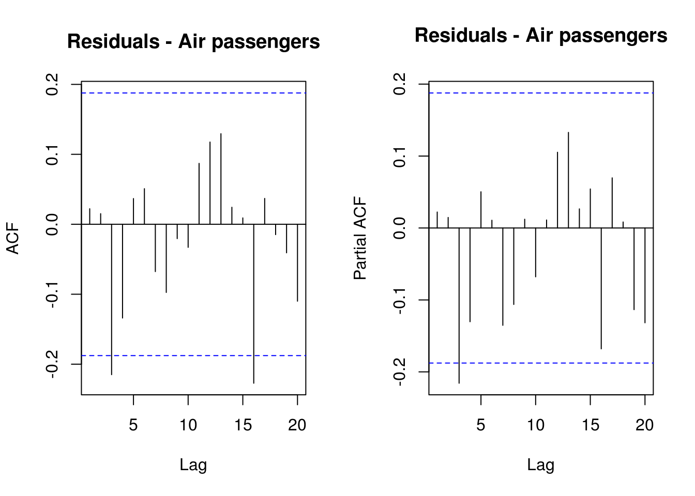
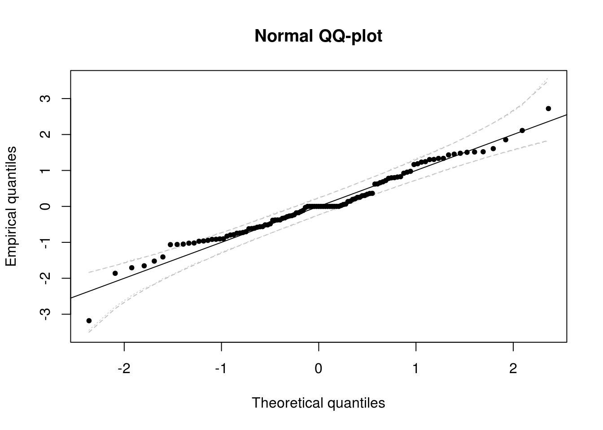
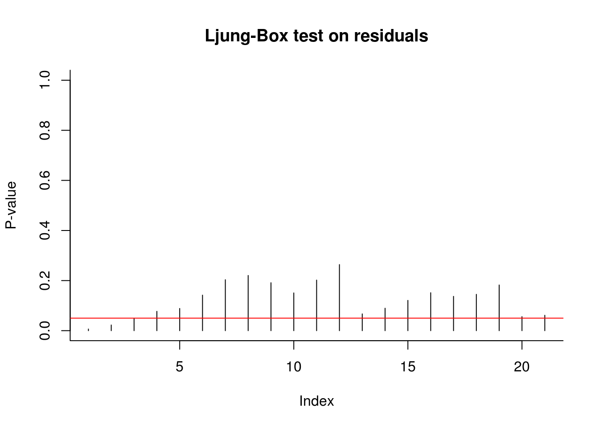

5.2 State-space models and the Kalman filter
The main packages for performing dynamic linear modelling are dlm and KFAS (another package, dlmodeler, unifies the interface between the two). The package KFAS has more functionalities — see the vignette and the examples in ?KFAS for details).
The dataset under study, AirPassengers, contains a time series with the number (in thousands) of air passengers worlwide. We fit a local linear trend model with seasonality to the latter. This is the dynamic equivalent of a time series model with intercept, trend and monthly dummies. The local level component is equivalent to an ARIMA(0,1,1), so the trend component will likely be negligeable here if we allow the level to vary. It does change the forecasts, since doubly-differencing creates a linear trend in the forecast as we have seen before in the Mauna Loa CO\(_2\) example.
The unknown components are the four variance coefficients (and tentatively the initial states). If the latter are not specified or estimated, they are taken to be diffuse, starting from zero. This mean we would need to discard the first smoothed state estimates.
The steps to be undertaken are when fitting a dynamic linear model
- Specify the model structure, indicating which parameters are to be estimated. You can include deterministic components by fixing their respective variance to zero. For seasonal models with dummies, only the first variance should be non-zero.
- Obtain maximum likelihood estimates numerically
- Plug the estimated parameters in the model
- Filter forward the estimates. If you did not estimated or specified the initial state
m0, the latter will be zero and this will impact your filtered values - Perform smoothing-backwards on the filtered object
- Obtain forecasts (this does not work in
dlmwith regression models, but can be done manually using the Kalman recursions). - Run the usual diagnostics on the residuals (filtered minus observed) to check the adequacy of your model
library(dlm)
data("AirPassengers")
#?"AirPassengers"
#Fit a local level with seasonal dummies
plot(log(AirPassengers), ylab = "log monthly total passengers (in thousands)",
main = "Number of international air passengers")
#Keep some observations for forecast validation
y <- as.numeric(log(window(AirPassengers, end = c(1958))))
n <- length(y)
time <- as.vector(time(window(AirPassengers, end = c(1958))))
month <- as.factor(as.integer(time*12) %%12)
#Build the dynamic linear model - specification with local level + seasonal component (dummies)
#Need to specify initial values for mean m0, otherwise forecasts are diffuse values from zero
#takes a few steps to adjust
build <- function(params) {
level <- dlmModPoly(order = 2, dV = exp(params[1]), dW = c(exp(params[2:3])))
seas <- dlmModSeas(frequency = 12, dV = exp(params[1]), dW = c(exp(params[4]), rep(0, 10))) #stochastic seas.
mod <- level + seas
return(mod)
}
#Initial parameter values - four log-variance, mean and trend, seasonal effect
init <- rep(-5,4)
#Fit the DLM model - numerical optimization
fit <- dlmMLE(y = y, parm = init, build = build, method = "BFGS", control=list(trace = 10, maxit = 1000)) initial value 8.105325
iter 10 value -151.637115
iter 20 value -151.688555
iter 30 value -151.689585
final value -151.689701
converged#Define model with estimated parameters
mod <- build(fit$par)
#Variance matrices
V(mod); #W(mod), but only diag(W(mod))[1:3] non-null [,1]
[1,] 0.0002514017#We could remove the trend and mayhaps make the seasonal part deterministic
#Filtering
filtered <- dlmFilter(y, mod)
#plot(time, y, type = "l")
lines(time, c(mod$FF %*% t(filtered$m[-1,])), col = 2, lwd = 2) #filtered states
#One-step ahead forecasts (a linear fn of filtering mean)
forecasted <- dlmForecast(filtered, nAhead = 36)
timelo <- seq(tail(time,1) + 1/12, by = 1/12, length = 36)
lines(timelo, forecasted$f, col = 4, lwd=2)
legend("bottomright", c("Original series","Filtered states","One-step forecasts"),
lty=c(1, 1, 1), lwd=c(1,2,2), col=c(1,2,4),bty = "n")
#90% Confidence intervals
plot(log(window(AirPassengers, start=1956)), ylab = "log monthly total passengers (in thousands)",
main = "Number of international air passengers", ylim=c(5,7), type = "b", pch = 20)
polygon(x=c(timelo, rev(timelo)), y = c(forecasted$f + qnorm(0.95)*sqrt(unlist(forecasted$Q)),
rev(forecasted$f - qnorm(0.95)*sqrt(unlist(forecasted$Q)))), col=scales::alpha("blue", alpha=0.3))
lines(timelo, forecasted$f, col = 4, lty = 2)
legend("topleft", c("Data","One-step forecasts"), lty=c(1, 2), lwd=2, col=c(1,4), pch=c(20,NA), bty = "n")
smoothed <- dlmSmooth(filtered)
plot(time, smoothed$s[-1,1], type= "l", ylab = "", ylim=c(4,6.5), lwd=2, main = "Smoothed states")
lines(time, 4.5 + smoothed$s[-1,3], col = 2, lwd = 2, lty = 4)
legend("topleft", c("Local linear","Seasonal + 4.5"), lty = c(1, 4), lwd = 2, col = 1:2, bty = "n")
abline(lm(y ~ time)$coefficients)
Let us do the same analysis, this time with KFAS. The model is defined analogously, but this time, the parameters to be estimated are left as NA.
y2 <- log(window(AirPassengers, end = c(1958)))
library(KFAS)
model <- SSModel(y2 ~ SSMtrend(2, Q = list(matrix(NA), matrix(NA))) + SSMseasonal(period = 12,
sea.type = "dummy", Q = NA), H = matrix(NA))
fit2 <- fitSSM(model, inits = c(0, 0, 0, 0), method = "BFGS")
# Maximum likelihood estimate for sigmas
exp(fit2$optim.out$par)[1] 5.961276e-04 3.468949e-09 1.377059e-08 3.703626e-04# Kalman filtering and smoothing
out <- KFS(fit2$model)
outSmoothed values of states and standard errors at time n = 109:
Estimate Std. Error
level 5.923737 0.018009
slope 0.010225 0.002386
sea_dummy1 -0.089207 0.010058
sea_dummy2 -0.097948 0.010232
sea_dummy3 -0.219836 0.010212
sea_dummy4 -0.079318 0.010196
sea_dummy5 0.063466 0.010185
sea_dummy6 0.187795 0.010178
sea_dummy7 0.199432 0.010176
sea_dummy8 0.104437 0.010178
sea_dummy9 -0.014626 0.010185
sea_dummy10 -0.000807 0.010196
sea_dummy11 0.041156 0.010212 model_air <- fit2$model
# Confidence and prediction intervals for the expected value and the
# observations. Note that predict uses original model object (with
# estimated parameters), not the output from KFS.
conf_air <- predict(model_air, interval = "confidence", level = 0.9)
pred_air <- predict(model_air, interval = "prediction", level = 0.9)
# Plot of estimated states If we do not estimate the initial states, we
# should get rid of first 12+1 first values Because they are used for the
# initialization
plot(window(out$a[, "level"], start = c(1950, 2)), type = "l", ylim = c(4, 6.5),
ylab = "log monthly total passengers (in thousands)", lwd = 2, main = "Smoothed states")
# lines(window(out$a[,'slope'] + 5, start = c(1950, 2)), col = 3, lwd = 2)
lines(window(out$a[, "sea_dummy1"] + 4.5, start = c(1950, 2)), col = 2, lwd = 2)
legend("topleft", c("Local level", "Seasonal + 4.5"), lty = c(1, 4), lwd = 2,
col = 1:2, bty = "n")
# Filtering backwards plus one-step ahead forecasts Plot has one-step ahead
# forecasts, confidence intervals and one-step ahead prediction intervals
ts.plot(cbind(y2, pred_air, conf_air[, -1]), col = c(1, 2, 3, 3, 4, 4), ylab = "log monthly total passengers (in thousands)",
main = "Number of international air passengers")
legend("topleft", c("Observed", "Predictions", "Prediction interval", "Confidence interval"),
lty = 1, lwd = 2, col = 1:4, bty = "n")
# Predictions ahead
pred_air <- predict(model_air, interval = "prediction", level = 0.9, n.ahead = 36)
ts.plot(cbind(log(window(AirPassengers, start = 1955, end = 1961)), pred_air),
col = c(1, 2, "grey", "grey"), ylab = "log monthly total passengers (in thousands)",
main = "Number of international air passengers", lty = c(1, 1, 2, 2))
legend("topleft", c("Observed", "Predictions", "Prediction intervals"), lty = c(1,
1, 2), lwd = 2, col = c(1, 2, "grey"), bty = "n")
It now remains to perform some validation diagnostics. We check first the (partial) correlograms to ensure that there is no residual autocorrelation, then test the normality of the residuals and the hypothesis that they are white noise.
To add a confidence interval to the QQ-plots, we can use two methods. Recall that the standard normal quantile-quantile plot has - on the \(x\) axis, the theoretical quantiles, \(\Phi^{-1}(\mathrm{rank}(X_i)/(n+1))\) - on the \(y\) axis, the empirical quantiles, \(X_i\)
Under the null hypothesis that the observations are independent and identically distributed from \(\mathcal{N}(0,1)\)
- the \(i\)th order statistic of the uniform \(U_{(i)}=\Phi^{-1}(X_{(i)})\) is distributed as Beta \(\mathcal{B}(i, n-i+1)\). Thus, a 95% pointwise confidence interval can be obtained by taking the 2.5 and 97.5 percentiles of the Beta and applying the transformation \(\Phi^{-1}\) to the latter.
- We can resort to the bootstrap and simulate \(B=1000\) samples under the null hypothesis. Here, we would thus generate \(B\) samples from \(\mathcal{N}(0,1)\) of size \(n\) and order each of them. This yields \(\{X_{i,b}\}\) for \(i=1, \ldots, n\) and \(b = 1, \ldots, B\) where \(X_{1,b} < X_{2, b} < \ldots, X_{n,b}\). It remains to take the 2.5 and 97.5 percentiles of the \(i\)th order statistic \(\{X_{i, b}\}, b=1, \ldots, B\). Note that if your residuals were \(\mathcal{N}(\mu, \sigma^2)\) rather than \(\mathcal{N}(0,1)\) and you scaled them by subtracting \(\hat{\mu}\) and dividing by \(\hat{\sigma}\), you should scale the replicate samples in an analogous fashion by estimating the mean and variance of each of the \(B\) samples.
oldpar <- par(no.readonly = TRUE)
par(mfrow = c(1, 2))
TSA::acf(resid(filtered)$res, main = "Residuals - Air passengers")
pacf(resid(filtered)$res, main = "Residuals - Air passengers")
par(oldpar)
# Normal quantile-quantile plot with confidence intervals
res <- resid(filtered)$res
n <- length(res)
quant <- qnorm(rank(res)/(n + 1))
# Pointwise limits based on distribution of order statistics
confint_lim <- t(sapply(1:n, function(i) {
qnorm(qbeta(c(0.025, 0.975), i, n - i + 1))
}))
matplot(sort(quant), confint_lim, type = "l", lty = 2, col = "grey", main = "Normal QQ-plot",
xlab = "Theoretical quantiles", ylab = "Empirical quantiles")
# Pointwise limits based on draws from null model
confint_lim2 <- t(apply(apply(matrix(rnorm(1000 * n), nrow = n, ncol = 1000),
2, sort), 1, function(x) {
quantile(x, c(0.025, 0.975))
}))
matplot(sort(quant), confint_lim, type = "l", lty = 2, col = "grey", main = "Normal QQ-plot",
xlab = "Theoretical quantiles", ylab = "Empirical quantiles")
matplot(sort(quant), confint_lim2, type = "l", lty = 3, col = "lightgrey", add = TRUE)
points(quant, res, pch = 20)
abline(c(0, 1))
# Ljung-Box test on residuals
plot(sapply(4:24, function(l) {
Box.test(x = res, lag = l, type = "L", fitdf = 3)$p.value
}), type = "h", ylim = c(0, 1), ylab = "P-value", main = "Ljung-Box test on residuals",
bty = "l")
abline(h = 0.05, col = 2)
The diagnostic plots here indicate that the results are not quite white noise, but the correlogram indicates that there is no residual linear dependence (they are uncorrelated). The quantile-quantile plot shows that the fit is satisfactory - more than 95% of the values falls within the confidence bands.
5.2.1 Exercise 1: Dynamic linear model for the Nile river dataset
- Try removing the trend component. Does your conclusions change?
- Fix the variance component corresponding to the seasonal part to zero (making the effect deterministic). Test whether the latter was significant.
- Remove the initial states from the analysis and compare the filtered estimates.
- Repeat the analysis on the
niledataset. - Add an intervention covariate to the model for
nile, corresponding to a structural break in level in 1902 due to the Assouan dam construction.